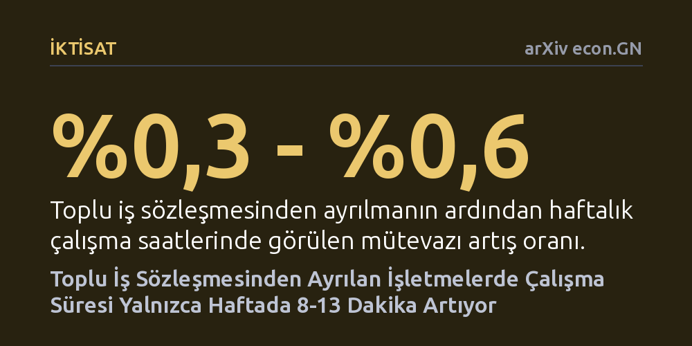

IKTISAT · arXiv econ.GN · 2026-10-10
Araştırmacılar, Almanya'da toplu iş sözleşmesinden ayrılan işletmelerin çalışma sürelerini ve hafta sonu mesaisini artırıp artırmadığını 2008-2024 verileriyle inceledi. Ayrılmanın ardından haftalık çalışma süresinin yalnızca 8 ila 13 dakika arttığı, hafta sonu çalışmalarında ise belirgin bir değişiklik olmadığı görüldü.
İşverenlerin toplu sözleşmelerden çalışma saatlerindeki katılık yüzünden ayrıldığı savının aksine, sözleşmeden çıkmanın çalışma sürelerini fiilen neredeyse hiç değiştirmediğini gösteriyor.

Almanya'da işveren temsilcileri ve işletmeler, sendikalarla yapılan toplu iş sözleşmelerinin çalışma saatleri konusunda kendilerini fazlasıyla kısıtladığını ve operasyonel esnekliklerini engellediğini uzun süredir öne sürüyor. Bu görüşe göre şirketler, küresel rekabet ortamında haftalık çalışma sürelerini serbestçe uzatabilmek ya da hafta sonu vardiyaları koyabilmek için toplu sözleşme düzeninden ayrılmak zorunda kalıyor. Daha önce yapılan anket çalışmaları da yöneticilerin bu tür çalışma saati kısıtlarını sözleşmeden ayrılmanın başlıca gerekçeleri arasında saydığını ortaya koyuyordu.
Ancak anketlerde beyan edilen bu şikayetlerin işletmelerin sahadaki fiili uygulamalarına ne ölçüde yansıdığı bugüne kadar yeterince aydınlatılamamıştı. İşletmeler toplu pazarlık kapsamından çıktıklarında çalışma saatlerini gerçekten hissedilir biçimde artırıyor mu, yoksa bu esneklik argümanı yalnızca sözleşmeden çıkışı meşrulaştıran bir gerekçeden mi ibaret? Bu soru, hem sendikalı çalışma düzeninin işletmeler üzerindeki gerçek yükünü görmek hem de iş gücü piyasasındaki dönüşümün ardındaki gerçek dinamikleri anlamak açısından kritik önem taşıyor.
Araştırmacılar Vinzenz Pyka ve André Rieder, bu soruya yanıt bulabilmek için Almanya İşgücü Piyasası ve Meslek Araştırmaları Enstitüsü'nün (IAB) İşletme Paneli verilerini kullandı. Çalışma, 2008 ile 2024 yılları arasını kapsayan 16 yıllık geniş bir dönem boyunca toplu iş sözleşmesi kapsamından ayrılan işletmelerin çalışma süresi düzenlemelerini adım adım takip etti.
Analiz sürecinde sabit etkiler ve olay çalışması ekonometrik modelleri uygulandı. Bu yöntemler sayesinde, işletmelerin sözleşmeden ayrılmadan önceki ve ayrıldıktan hemen sonraki çalışma saatleri karşılaştırılarak işletmeye özgü değişmeyen niteliklerin ve genel ekonomik dalgalanmaların sonuçları saptırması engellendi. Araştırmacılar yalnızca standart haftalık çalışma saatlerini değil; cumartesi ve pazar günleri çalışma gibi diğer esneklik göstergelerini de ayrıntılı olarak inceledi.
Elde edilen sonuçlar, işverenlerin esneklik kısıtı iddialarının sahadaki karşılığının son derece sınırlı olduğunu gösterdi. Toplu iş sözleşmesinden ayrılmanın ardından haftalık çalışma sürelerinde yalnızca yüzde 0,3 ila 0,6 düzeyinde mütevazı bir artış gerçekleşti. Bu oran, çalışan başına haftada sadece 8 ila 13 dakikalık ek bir çalışma süresine karşılık geliyor. Söz konusu küçük ayarlama ise sözleşme kapsamından çıkışın hemen ardından gerçekleşiyor ve sonraki dönemde kayda değer bir artış göstermiyor.
Araştırmacılar, çalışma saatleri esnekliğinin diğer boyutlarını incelediklerinde de benzer bir tabloyla karşılaştı. İşletmelerin toplu sözleşmeden ayrıldıktan sonra cumartesi veya pazar günleri çalışma uygulamasını daha yoğun biçimde kullandığına dair hiçbir istatistiksel kanıt bulunamadı. Kısacası işletmeler, toplu sözleşme kurallarından bağımsız hale geldiklerinde çalışma düzenlerini radikal biçimde değiştirecek adımlar atmadı.
Elde edilen bulgular, geçmişte yöneticilerle yapılan anketlerde dile getirilen iddiaların gerçeği yansıtmadığını gösteriyor. Anketlerde çalışma saatlerindeki katılık temel şikayet konusu olarak sunulsa da, işletmelerin fiili davranışları bu kuralların sanıldığı gibi şirketlerin elini kolunu bağlayan bir engel oluşturmadığını ortaya koyuyor. Şirketler sözleşme bağından kurtulduklarında dahi haftalık çalışma süresini ve hafta sonu mesaisini neredeyse hiç değiştirmeden sürdürüyor.
Bu durum, çalışma saatlerindeki kısıtlamaların toplu iş sözleşmesi kapsamından çıkışın temel itici güçlerinden biri olduğu tezini ciddi şekilde çürütüyor. İşletmelerin toplu pazarlık masasından kalkma kararının ardında çalışma süresi esnekliğinden ziyade, doğrudan ücret maliyetlerini aşağı çekme arzusu veya sendikal denetimden bütünüyle kaçınma isteği gibi farklı ekonomik ve yönetimsel motivasyonların yattığı anlaşılıyor.